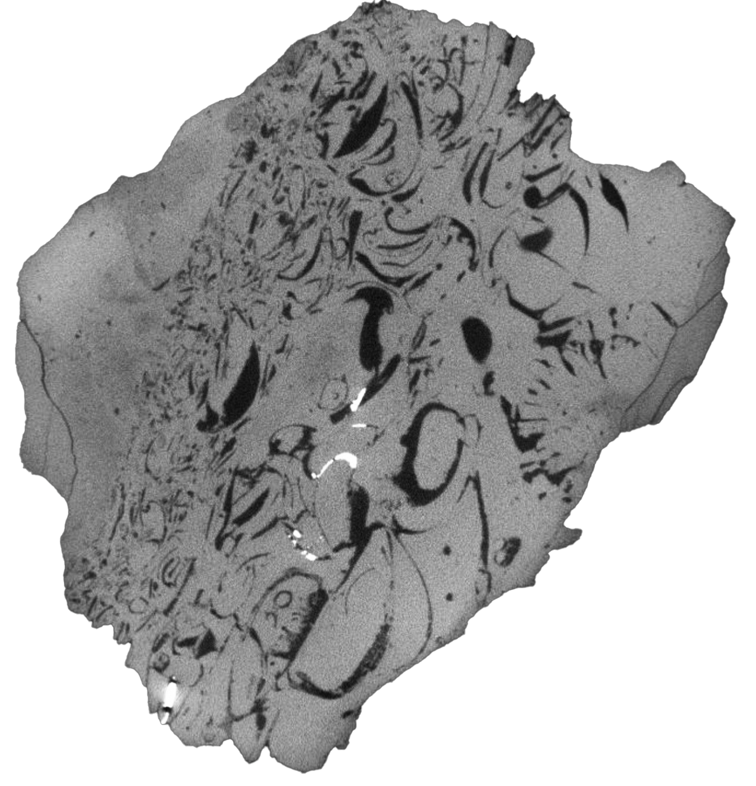

CT scanning of shell beds from the Upper Triassic of England

Overview
This project explored fossil shell beds as records of past ecological dynamics. These deposits can preserve information on species composition, size distribution, spatial organization, and biotic interactions, but this data is often difficult to access when fossils are embedded in rock. The aim was to develop a non-destructive imaging workflow to visualize and study fossils within consolidated shell beds.
Methods
Fieldwork was carried out at Pinhay Bay (Devon, UK), sampling Upper Triassic deposits. Specimens were CT-scanned, and volumetric datasets were processed to digitally isolate individual fossils. Segmentation and 3D reconstructions were performed using ImageJ and Avizo, taking advantage of natural density contrasts between the rock matrix and fossil cavities.
Example of shell bed virtual slice ⬏

Results
The assemblage included corals, gastropods, and bivalves, revealing a diverse ancient community. 3D reconstructions made it possible to observe biotic interactions, such as corals encrusting bivalve shells, providing insights into paleoecological relationships and environmental conditions. This project highlights the potential of CT-based virtual paleontology for studying fossil communities in 3D and opens the way for future quantitative comparisons of shell-bed ecosystems.
⬐ Results were presented as a poster at a student scientific conference (click on it to view)


The beautiful Pinhay Bay